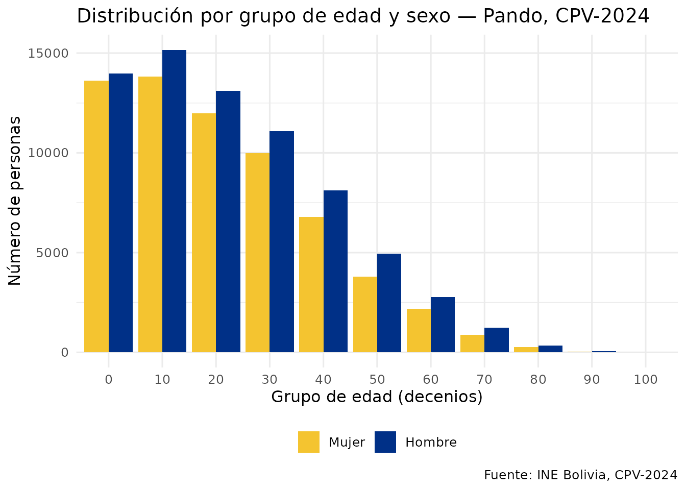
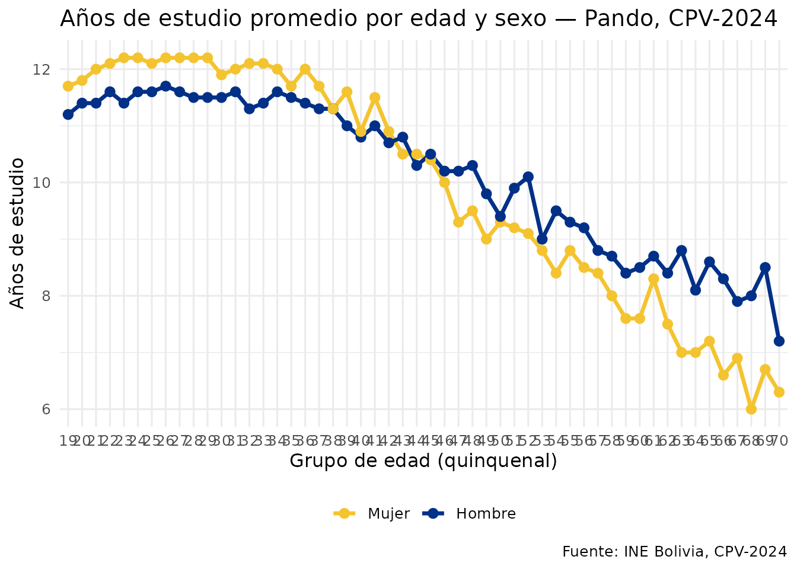

¿Por qué usar Arrow o DuckDB?
Con 11 millones de personas, los datos del CPV-2024 pueden ser
difíciles de manejar en RAM. censosbo resuelve esto
con:
-
Arrow: aplica filtros y agregaciones antes
de cargar datos en RAM. Compatible con
dplyr. - DuckDB: motor SQL columnar en memoria, muy rápido para queries analíticas y JOINs entre tablas.
Arrow: análisis lazy con dplyr
El dataset Arrow no carga los datos en RAM. dplyr
traduce los verbos a operaciones sobre el Parquet, y solo
collect() materializa el resultado.
# Dataset Arrow de Pando (el departamento más pequeño, ~7 MB)
ds <- get_personas_2024(
departamento = "Pando",
as = "arrow"
)
#> ℹ Descargando persona_dep09.parquet (~4 MB)...
#> ✔ Descargado persona_dep09.parquet [268ms]
#>
class(ds)
#> [1] "FileSystemDataset" "Dataset" "ArrowObject"
#> [4] "R6"
# Pipeline lazy: todo ocurre en Arrow, solo el resumen llega a RAM
resumen <- ds |>
filter(p26_edad >= 15) |>
group_by(p25_sexo) |>
summarise(
personas = n(),
edad_prom = mean(p26_edad, na.rm = TRUE),
.groups = "drop"
) |>
collect() |>
etiquetar_valores()
resumen
#> # A tibble: 2 × 3
#> p25_sexo personas edad_prom
#> <fct> <int> <dbl>
#> 1 Hombre 48918 35.8
#> 2 Mujer 42152 35.0
# Distribución de edad en Pando
ds |>
filter(!is.na(p26_edad)) |>
mutate(grupo = (p26_edad %/% 10L) * 10L) |>
count(grupo, p25_sexo) |>
collect() |>
etiquetar_valores() |>
ggplot(aes(x = factor(grupo), y = n, fill = p25_sexo)) +
geom_col(position = "dodge") +
scale_fill_manual(values = c("Mujer" = "#F4C430", "Hombre" = "#003087")) +
labs(
title = "Distribución por grupo de edad y sexo — Pando, CPV-2024",
x = "Grupo de edad (decenios)",
y = "Número de personas",
fill = NULL,
caption = "Fuente: INE Bolivia, CPV-2024"
) +
theme_minimal(base_size = 12) +
theme(legend.position = "bottom")
DuckDB: SQL sobre los datos del censo
library(DBI)
con <- get_personas_2024(departamento = "Pando", as = "duckdb")
#> ✔ Usando caché: persona_dep09.parquet
#> duckdb keeps downloaded extensions and secrets in a temporary directory:
#> ℹ /tmp/Rtmpne2Id9/duckdb
#> This is removed when the R session ends.
#> • Extensions are re-downloaded each session.
#> • Secrets are lost.
#> ℹ Run duckdb(shared_home = TRUE) (or create ~/.duckdb) to keep them (suitable for most users).
#> ℹ Run duckdb(shared_home = FALSE) to accept the temporary directory (and silence this message).
#> ℹ See ?duckdb_storage for details and alternatives.
# SQL estándar con agregaciones
DBI::dbGetQuery(con, "
SELECT
p25_sexo,
COUNT(*) AS total,
ROUND(AVG(p26_edad), 1) AS edad_prom,
ROUND(AVG(aestudio), 1) AS anios_estudio_prom
FROM personas
WHERE p26_edad >= 15
GROUP BY p25_sexo
ORDER BY p25_sexo
") |> etiquetar_valores()
#> p25_sexo total edad_prom anios_estudio_prom
#> 1 Mujer 42152 35.0 10.9
#> 2 Hombre 48918 35.8 10.6
# Window functions: municipios con mayor población
DBI::dbGetQuery(con, "
SELECT
imun,
COUNT(*) AS poblacion,
RANK() OVER (ORDER BY COUNT(*) DESC) AS ranking
FROM personas
GROUP BY imun
ORDER BY ranking
LIMIT 10
")
#> imun poblacion ranking
#> 1 01 79399 1
#> 2 02 27814 2
#> 3 03 23351 3
#> 4 04 3630 4
# Años de estudio por grupo quinquenal de edad
anos_edad <- DBI::dbGetQuery(con, "
SELECT
FLOOR(p26_edad / 5) * 5 AS grupo_edad,
p25_sexo,
ROUND(AVG(aestudio), 1) AS anios_edu
FROM personas
WHERE p26_edad BETWEEN 15 AND 70
AND aestudio IS NOT NULL
GROUP BY grupo_edad, p25_sexo
ORDER BY grupo_edad
") |> etiquetar_valores()
DBI::dbDisconnect(con)
ggplot(anos_edad, aes(x = factor(grupo_edad), y = anios_edu,
color = p25_sexo, group = p25_sexo)) +
geom_line(linewidth = 1.2) +
geom_point(size = 2.5) +
scale_color_manual(values = c("Mujer" = "#F4C430", "Hombre" = "#003087")) +
labs(
title = "Años de estudio promedio por edad y sexo — Pando, CPV-2024",
x = "Grupo de edad (quinquenal)",
y = "Años de estudio",
color = NULL,
caption = "Fuente: INE Bolivia, CPV-2024"
) +
theme_minimal(base_size = 12) +
theme(legend.position = "bottom",
axis.text.x = element_text(angle = 45, hjust = 1))
Join entre tablas con DuckDB
con <- DBI::dbConnect(duckdb::duckdb(), dbdir = ":memory:")
#> duckdb keeps downloaded extensions and secrets in a temporary directory:
#> ℹ /tmp/Rtmpne2Id9/duckdb
#> This is removed when the R session ends.
#> • Extensions are re-downloaded each session.
#> • Secrets are lost.
#> ℹ Run duckdb(shared_home = TRUE) (or create ~/.duckdb) to keep them (suitable for most users).
#> ℹ Run duckdb(shared_home = FALSE) to accept the temporary directory (and silence this message).
#> ℹ See ?duckdb_storage for details and alternatives.
duckdb::duckdb_register_arrow(
con, "personas",
get_personas_2024(departamento = "Pando",
variables = c("idep","iprov","imun","i00","p25_sexo","p26_edad","nivel_edu"))
)
#> ✔ Usando caché: persona_dep09.parquet
duckdb::duckdb_register_arrow(
con, "viviendas",
get_viviendas_2024(departamento = "Pando",
variables = c("idep","iprov","imun","i00","urbrur","v07_aguapro","v09_energia"))
)
#> ℹ Descargando vivienda.parquet (~55 MB)...
#> ✔ Descargado vivienda.parquet [589ms]
# Indicador: personas con educación superior en viviendas con servicios básicos
DBI::dbGetQuery(con, "
SELECT
v.urbrur,
COUNT(*) AS personas_edu_sup,
ROUND(AVG(p.p26_edad), 1) AS edad_prom
FROM personas p
JOIN viviendas v
ON p.idep = v.idep AND p.iprov = v.iprov
AND p.imun = v.imun AND p.i00 = v.i00
WHERE p.nivel_edu >= 4 -- educación superior
AND v.v07_aguapro = 1 -- red de agua pública
AND v.v09_energia = 1 -- red eléctrica
AND p.p26_edad >= 25
GROUP BY v.urbrur
ORDER BY v.urbrur
") |> etiquetar_valores()
#> urbrur personas_edu_sup edad_prom
#> 1 Urbana 10095 39.8
#> 2 Rural 368 37.6
DBI::dbDisconnect(con)Análisis nacional sin cargar todo en RAM
Cuando necesitas estadísticas del país entero, Arrow agrega en el Parquet y solo trae el resumen a memoria.
# Descargar todos los departamentos (~560 MB) y agregar sin cargar todo en RAM
personas_full <- get_personas_2024(as = "arrow")
resumen_nacional <- personas_full |>
filter(!is.na(p26_edad)) |>
group_by(idep) |>
summarise(
poblacion = n(),
edad_mediana = median(p26_edad),
.groups = "drop"
) |>
collect() |>
left_join(departamentos(), by = "idep") |>
arrange(desc(poblacion))
resumen_nacionalRendimiento comparado
| Operación | Arrow + dplyr | DuckDB | tibble en RAM |
|---|---|---|---|
| Filtro simple | Muy rápido | Muy rápido | Lento |
| Agregación | Rápido | Muy rápido | Medio |
| JOIN entre tablas | No directo | Muy rápido | Requiere merge |
| Uso de RAM | Mínimo | Mínimo | Alto |
| Compatibilidad dplyr | Total | Parcial (vía dbplyr) | Total |
Recomendación: usa Arrow + dplyr para exploración y filtros; usa DuckDB cuando necesites JOINs o window functions.